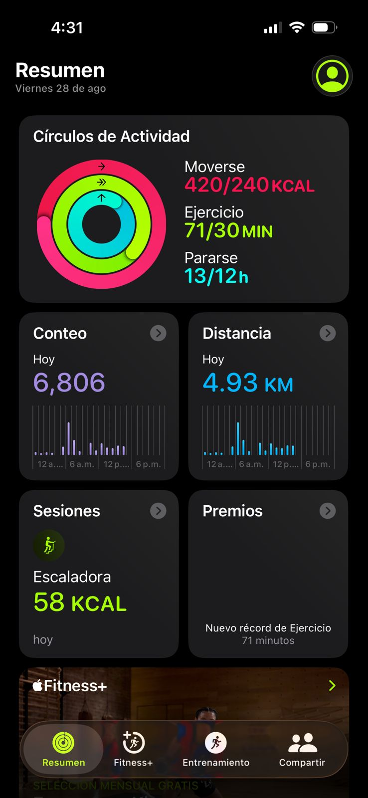
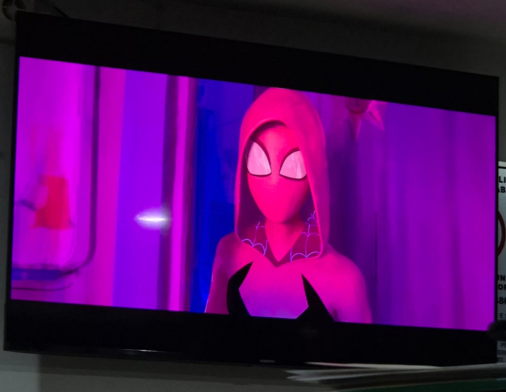

(04)
Pasatiempos

01Entrenamiento & Gym
Entrenar fuerza de forma constante me ayuda a mantener disciplina, liberar estrés y fomentar la superación personal que aplico día a día al resolver retos complejos.
 02
02
Cocina
Me gusta cocinar y buscar nuevas recetas para probar en especial recetas que son faciles de preparar.

03Música & Acústica
Me gusta ver películas y escuchar música, en especial géneros como el rock, pop, metal y música electrónica.